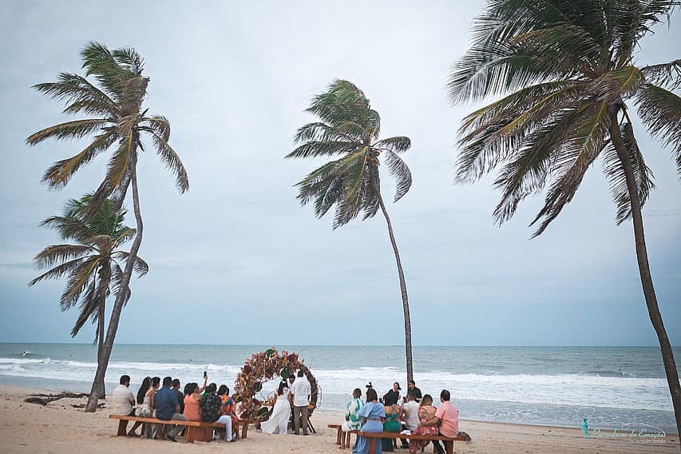
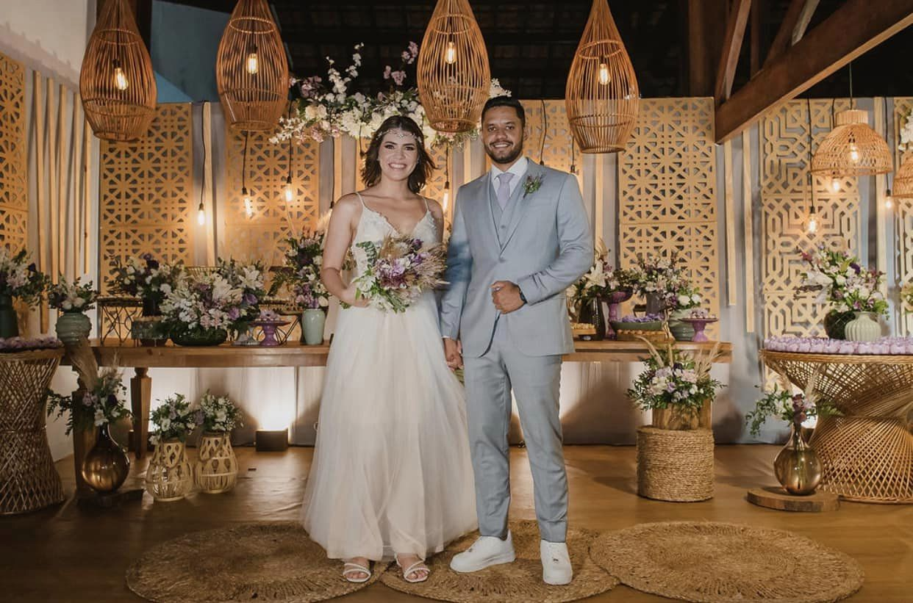
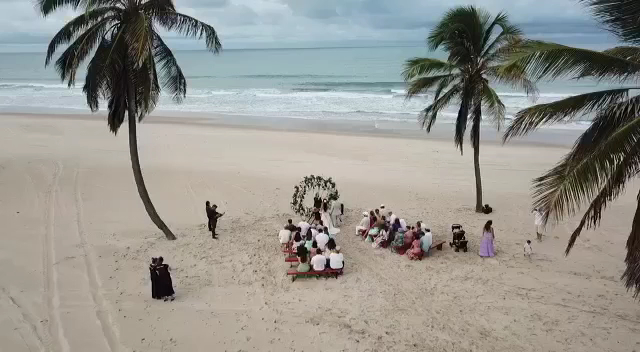
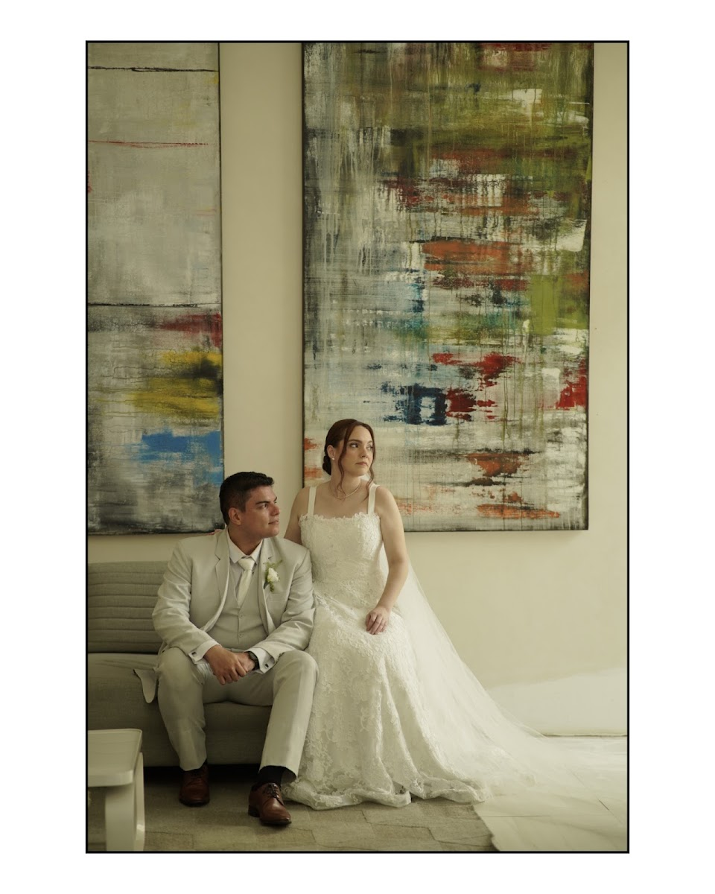

Cerimonialista · Eventos com assinatura

Casamentos, aniversários temáticos e festas de família com a consultoria e a calma de Sandra Gomes.
As clientes descrevem a Sandra como elegante, culta, objetiva e criativa. Mas o que mais aparece nas avaliações é a calma: aquela pessoa que tranquiliza quando você duvida que vai dar conta.
Muitas famílias chamam a Sandra de novo a cada fase da vida: do casamento civil ao religioso, do pré-wedding ao primeiro aninho do bebê.
“Com toda a sua calma, ela sempre me tranquilizava e fazia acreditar que tudo daria certo.”Cliente · Google
Do cartório ao altar, com roteiro e condução no dia.
Ensaios e celebrações antes do grande dia.
Como uma festa de 50 anos inspirada no São João, com buffet móvel de comidas típicas.
Para acompanhar a família depois do casamento.
Celebrações em hotéis de Fortaleza, como o Gran Marquise.
Tema, estilo e decoração pensados com você.
Foto, buffet, buffet móvel e equipe de apoio escolhidos a dedo.
Cada momento da festa organizado no papel.
Condução completa, para você só aproveitar.
Nota no Google · 51 avaliações
Responda 5 perguntas e mande para a Sandra um resumo da sua festa, com um cronograma sugerido.
Cuidou de cada detalhe do meu casamento civil, do meu pré-wedding, do meu casamento religioso.Noiva · Google
Minha cerimonialista de milhões de estrelas... ela resolve tudo!Cliente · Google
Com toda a sua calma, ela sempre me tranquilizava.Cliente · Google



WhatsApp: (85) 99692-9119
Endereço: R. Silva Jatahy, 15 · Meireles, Fortaleza - CE
Atendimento com hora marcada.